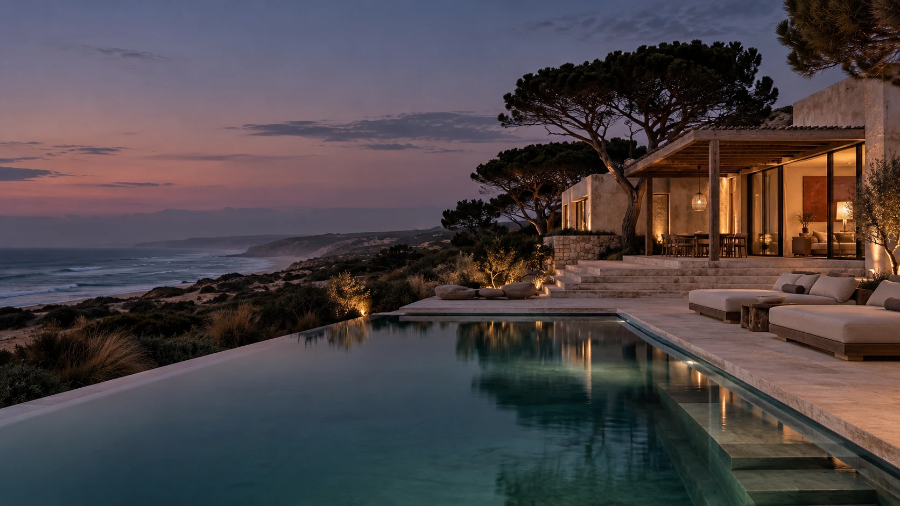
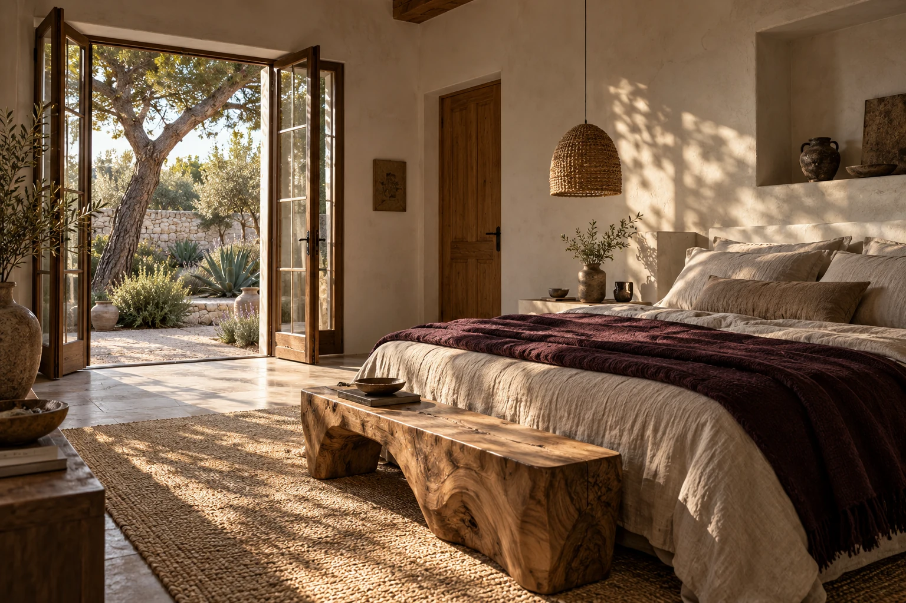
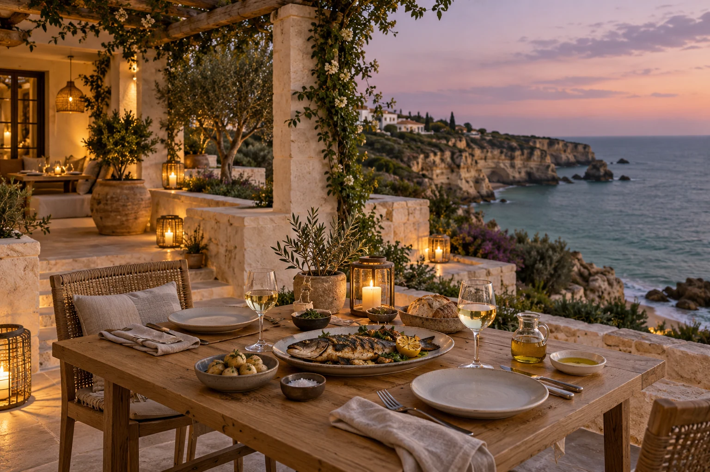

Ocean outlook · Private plunge pool · 2–4 guests
From €390per night

The Atlantic coast, Portugal
Salt on your skin. Space in your day.
A small coastal house to call your own.
Make yourself at home
There’s a particular kind of quiet here. Pines in the breeze. Coffee on the terrace. The Atlantic, always within earshot.
Stillwater is a small coastal hideaway built around the things that make a day feel good: thoughtful rooms, generous tables, and plenty of space to just be.

Your own corner of the coast
Natural linen. Warm stone. Doors that open to the outdoors. Two ways to settle in, each with a little room to breathe.
Ocean outlook · Private plunge pool · 2–4 guests
From €390per night
Private courtyard · King bed · 1–2 guests
From €260per night
Breakfast, long pool days, and a very warm welcome come with every room.
The art of an unhurried day
Wake to the sound of the coast. There’s fresh bread, local fruit, and coffee worth lingering over. Breakfast goes at your pace.
Out here, you can hear yourself think
Follow the dune paths. Find your stretch of sand. Take the long way back. On Portugal’s Atlantic coast, the best plans tend to be the ones you leave open.
Explore the Atlantic coast (opens in a new tab)Come hungry. Stay a while.
Fish from the coast. Vegetables from the garden. Something good in your glass. Our table follows the season, with simple Portuguese cooking and room for a long conversation.

A few good things to know
A little planning now.
A lot less thinking when you arrive.
Breakfast, access to the shared pool and gardens, Wi-Fi, in-room coffee and tea, and help planning your days along the coast. The Atlantic Suite also has its own plunge pool.
The Atlantic Suite sleeps up to four guests with a king bed and a separate daybed arrangement. Garden Rooms sleep up to two. Let us know everyone’s ages in your stay plan so the room setup can be discussed.
Check-in begins at 15:00 and check-out is by 11:00. If you expect an early arrival or a late departure, include a note in your stay plan. Timing depends on the room schedule.
Choose dates, a room, and your number of guests to create a personal stay plan with an indicative price. You can download the plan to keep or share. It is an enquiry brief, not a confirmed reservation; availability and final terms must be agreed separately.
Think beach days in summer, long walks and outdoor lunches in spring and autumn, and quieter days around the house in winter. The Atlantic sets its own pace, so bring a light layer in every season.
Leave a little space for yourself
The coast will take care of the rest.